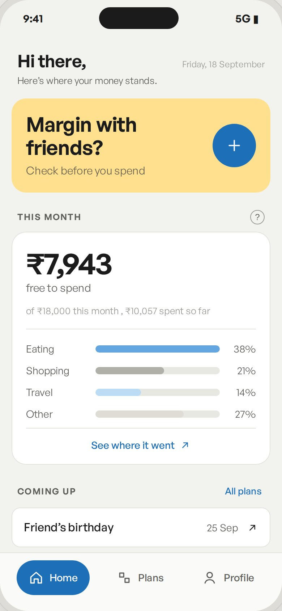
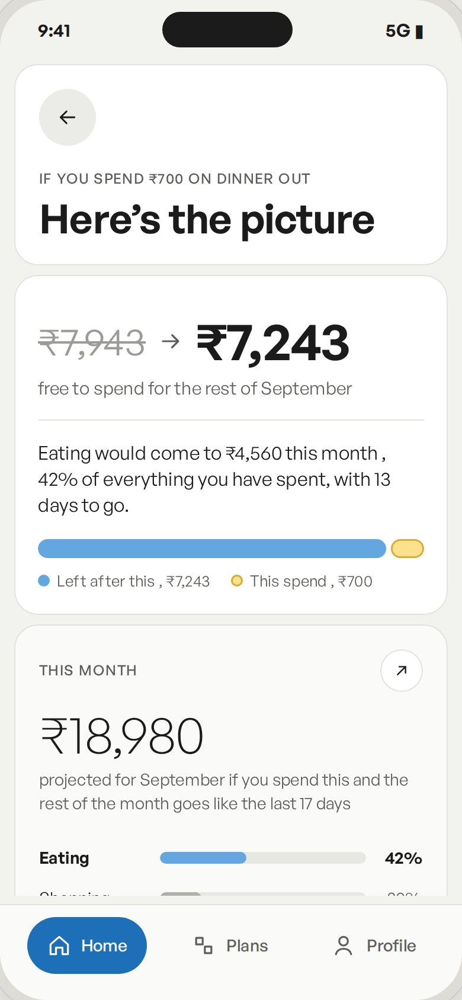
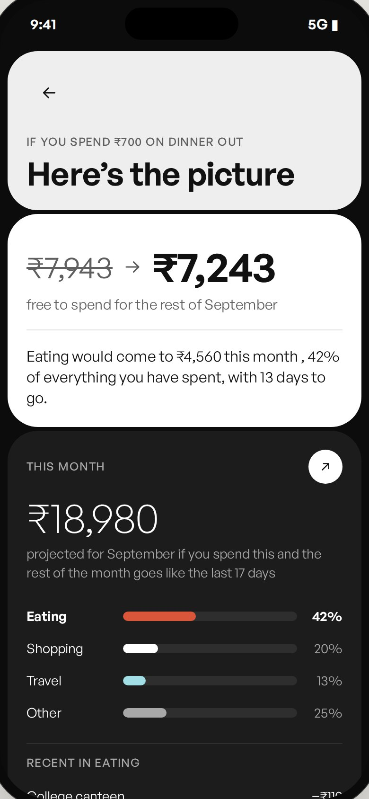
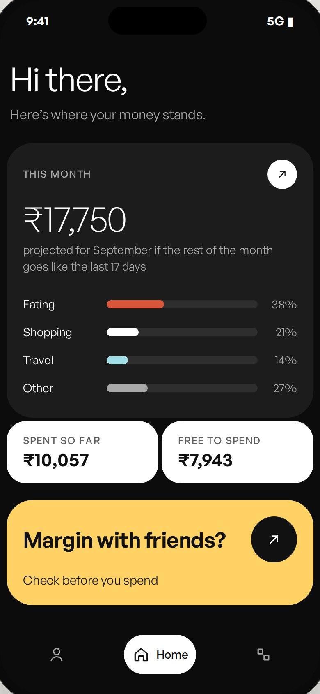
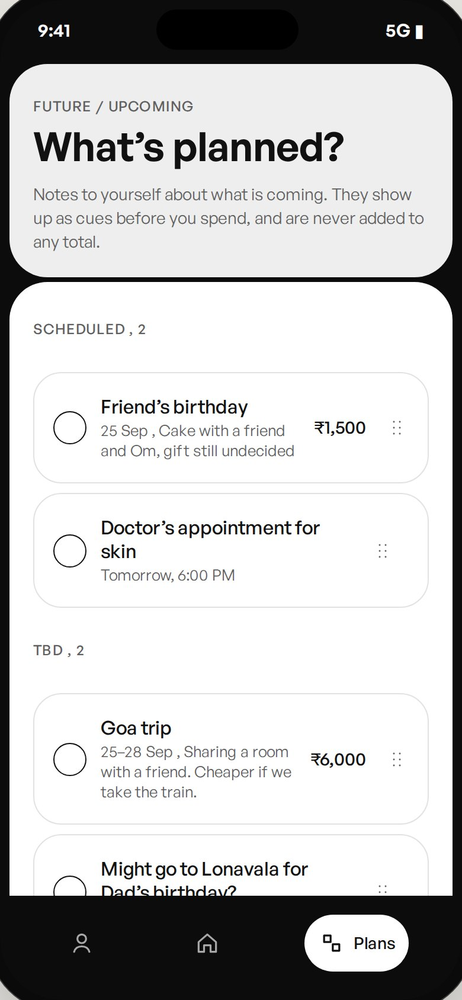

Margin
Evidence and test plan, with test results


Can making financial consequences visible at the moment of spending make spending decisions more conscious?
Participants are shown by code only, P01 to P10.Screens: Margin prototype V2, repository capture, sample names replaced.
Parts A and B are the test plan. C and D are the evidence. E and F turn a break into one change. G sets up the next round. H is the final results.
The project started as a tracking problem. The research showed that the deeper problem was about decisions.
Students already think about money in many ways: mental budgets, rough balances, future plans, spending limits, social situations, value, convenience and reflection after buying. The problem was not missing information. The problem was that people did not use that information when making the decision.
Know about a future expense
and still spend differently today.
Know their balance
and still not work out what a purchase will mean.
Notice that they spend often
and still decide that something was worth buying.
This moved the problem from tracking to considering the decision.
How do we help students track their money?
How do we make relevant financial information part of the spending decision?
What we are testing
Before or during a discretionary spending decision, the participant notices relevant financial context, understands the likely consequence of the proposed expense, and uses that information as one input into the decision.
Target behaviourBuy
Buy less
Delay
Substitute
Do not buy
Buy anyway, with awareness of the consequence
The last outcome is also a conscious decision.
“Spend less.”
Financial information becomes part of the decision before the person commits.
A participant who sees the consequence and still buys has not failed the intervention. The information still became part of the decision.
Maintained is not failed.
When is financial information most relevant?
Is the consequence of a proposed expense more useful than historical spending?
How much work does the user do to understand their position?
What happens when social or emotional context is stronger than financial context?
Do users want information, prompts and flags rather than enforced restriction?
Does awareness carry into later decisions?
The information may be useful in theory but unavailable at the exact moment when the decision happens.
| Field | Entry |
|---|---|
| Target action | Notice financial context, understand the consequence, use it as an input into a discretionary spending decision |
| CREATE stage diagnosed | Timing, with Ability and Evaluation secondary |
| The task, word for word | See B.3 |
| Pass criteria | 4 of 5 behavioural components |
| Riskiest assumption | The information is unavailable at the exact moment the decision happens |
The method
The order matters. The six days showed what spending decisions look like without an interface. The walkthrough then tested whether a product could create the same effect at the right moment.
Six days of spending observation
Participants observed and reflected on their own spending for six days, with no prototype involved.
Prototype walkthrough
Participants worked through the app as if in a real spending situation.
Use two researchers per session, never three. A participant surrounded by a panel can feel like they are being examined. Swap roles so everyone does both jobs.
Facilitator
Notetaker
A good task describes a situation the person recognises, says what they need to decide, and does not tell them how to do it.
| Weak task | Why it fails | What we use |
|---|---|---|
| “Try the potential spending feature.” | Names the control, so it tests eyesight, not behaviour | “Do whatever you would normally do.” |
| “What do you think of this screen?” | Asks for an opinion about a screen, not a behaviour | A situation and a decision to make |
| “Would you use this daily?” | Asks a future self, who is optimistic and polite | “When did you last do this for real? Walk me through it.” |
Read word for word, once, at the start of every session.
Thanks for doing this. This is a rough prototype I built for a class project, so it is half broken by design and none of this is a test of you. If something goes wrong it is my fault, not yours, and that is exactly the useful part.
I am going to give you a situation and then mostly stay quiet while you try it. It helps me a lot if you say what you are thinking out loud as you go, even if it is “I have no idea what this is.”
My teammate is writing notes. We will not use your name. Nothing you say here goes to anyone outside my class team and our tutor. You can stop at any point, skip anything, or ask me to delete the notes afterwards, and that is completely fine.
Is that alright? … And is it alright if I record just the audio, so I do not have to scribble? I can leave that off if you would rather.
After this, never apologise for the prototype again. It trains the participant to be gentle with you.
Drafting probes and debrief questions, piloted on a real person
| Do not say | What it actually does | Say instead |
|---|---|---|
| “Was that easy?” | Offers them the word “easy” and most people take it out of politeness | Nothing. You watched. You already know how long it took. |
| “Do you like it?” | Collects an opinion about your feelings, not a fact about their behaviour | “What would you have done here if I was not sitting next to you?” |
| “So you did not see the button?” | Puts your diagnosis in their mouth, and they will agree with it | “Tell me what you were looking for.” |
| “It is just a prototype, sorry.” | Trains them to be gentle with you for the rest of the session | Say it once in the consent script, then never again |
| “Would you use this daily?” | Asks a future self to make a promise | “How many times did you do this last week?” |
| “Most people click here.” | Ends the test. You have told them the answer. | Silence, then “what would you do next?” |
A participant will get stuck on something you can fix by saying four words, and they will look at you. Do not help. That stuck moment is the most expensive data you will collect all week.
Memory fades quickly, especially for moments that did not match what you expected. Do this before you check your phone.
Each of you says the one moment that surprised you most.
Agree the point where the behaviour actually stalled, and mark the CREATE stage. If you disagree about the stage, write both down: a disagreement is information.
Note anything you did wrong as a facilitator, so the next pair does not repeat it.
The participants
Participants are shown by code only.
| ID | Method | Main behavioural signal |
|---|---|---|
| 01 | Baseline observation | Social context, spontaneous spending |
| 02 | Baseline observation | Value, post-purchase evaluation |
| 03 | Baseline observation | Future allocation, buffer |
| 04 | Baseline observation | Future commitment not salient at the decision |
| 05 | Baseline observation | Calculation effort, timing |
| 06 | Baseline observation | Utility, novelty, perceived value |
| 07 | V1 walkthrough, about 26 min | Consequence, potential spending, agency |
| 08 | Prototype session | Existing payment tracking, future planning |
| 09 | Six-day self-observation | Repeated small-spend awareness |
| 10 | V2 walkthrough, about 10 min | Decision moment, friction, automation |
6
baseline observation records, P01 to P06
1
six-day self-observation record, P09
3
prototype sessions: P07 on V1, P08 against their payment app, P10 on V2
The six days showed what spending decisions look like without an interface. The walkthroughs then tested whether a product could create the same effect at the right moment. All counts in this document are out of these ten records.
What we found
Before the study, P09 bought snacks from vending machines or nearby stores at least twice a day and used autos regularly.
| Over six days of recording | |
|---|---|
| Snack purchases reduced | Yes |
| Some spontaneous purchases avoided | Yes |
| Some autos avoided | Yes |
| Accumulation more noticeable | Yes |
| Financial awareness increased | Yes |
The meaningful change was in salience. The participant did not suddenly discover the existence of snacks or autos. They discovered the frequency.
It did not need a warning, restriction, score or budget. The participant simply noticed something that was already happening.
Knowledge
Knowing something happens
Salience
Seeing it while it matters
A small transaction becomes psychologically significant when the pattern becomes visible.
Can a product make the same pattern noticeable at the moment of spending, without making the user calculate everything?
A transaction records an amount, time and merchant. A spending decision includes much more.
₹ amount
time, merchant
What financial information was actually part of the decision when it happened?
Between financial reality and the trade-off: the last point where information can still enter the decision.
What financial information was actually part of the decision when it happened?
Six records, six different reasons a purchase happened.
The social situation created the spending opportunity; intention came second
“though I didn't want”
“I wasn't, like, thinking about getting it in the first place, but, like, I got.”
Financial evaluation happened after the purchase, not before
“was it worth it?”
The recurring questionStrong existing mental allocation across today, tomorrow, future needs, unexpected costs and goals
“it's good to have, like, buffer money.”
A known future commitment was not active during the current decision
“I knew I had the dinner on Friday.”
Retrieval and calculation took longer than the decision itself
“By the time I've checked everything, the decision is already happening.”
Perceived value overrode financial caution
“mujhe kaafi fun product lag raha hai”
The future expense was not forgotten. It just was not part of the decision at that moment.
Known does not mean considered.
P03 shows the opposite. Being financially aware does not always mean spending less. It can mean choosing a different option.
Cheaper food
Walking instead of transport
Cutting another discretionary expense
Protecting a buffer
Whether a person compromises
Where a person compromises
Financial consciousness can change where a person compromises rather than whether they compromise.
The participant understood monthly spending, categories, patterns, future plans and potential spending.

V1 potential spend, prototype-v1.html. Sample names replaced.
What happened?
What happens if I do this?
The prototype became more useful when it showed the consequence, not just the information.
The system should help people think about the decision without making the decision for them.
A command
Enforced restriction
A flag, a question, an alert
P08 already used a payment app as the main source of truth for:
Transaction history
Money in and out
Payment descriptions
Groups and splits
A separate product does not add value just by copying transaction history.
A pattern is more useful when it tells the person what they can do with it.
Where did my money go?
Given what is coming, how much room do I have?
The strongest criticism was not about the visuals. The participant was asking:
When and where would I actually use this product?
V2 result with the progress bar, prototype-v2.html.
The progress bar suggested the opposite of the intended behaviour.
Timing
Information must appear before the decision is made.
Effort
The user should not have to work out their financial position.
Capture
Manual logging must not become the barrier to useful feedback.
A product can have clear features and still be unclear about when or why it should be used.
| Primary break | Secondary break | CREATE | M / A / P | |
|---|---|---|---|---|
| 01 | Social situation dominates | Financial context arrives late | CueTiming | Prompt |
| 02 | Value evaluated after spending | Evaluation | Motivation | |
| 03 | Existing mental budgeting already strong | Prototype may add limited value | EvaluationExperience | Ability |
| 04 | Future plan not active during current decision | Social and hunger context dominates | Timing | Ability, Prompt |
| 05 | Too many retrieval and calculation steps | Time pressure | AbilityTiming | Ability, Prompt |
| 06 | Perceived value overrides financial concern | Evaluation | Motivation | |
| 07 | Purpose of information unclear | Manual interaction effort | ExperienceEvaluation | Ability, Prompt |
| 08 | Existing transaction history reduces need for tracking | Future context more useful | ExperienceEvaluation | Ability |
| 09 | Frequency becomes visible only through observation | AwarenessEvaluation | Ability, Prompt | |
| 10 | Use situation unclear | Later logging creates friction | TimingExperience | Ability, Prompt |
Different participants struggled at different stages. The common opportunity is the gap between financial information being available and that information becoming useful in the decision.
First-pass clustering of collected notes, reworked by hand
Counts of records, never percentages.
Agency appears in almost every record. The other patterns appear in fewer records, but the specific reasons differ while the opportunity keeps appearing.
Not a need for another transaction tracker. A need for low-effort financial context that helps people judge a current or upcoming decision.
What broke
| # | What broke | Records | Stage | Severity | Why |
|---|---|---|---|---|---|
| 1 | Decision moment or use situation unclear | 2 | Timing | Blocker | User cannot reliably identify when the product enters the behaviour |
| 2 | Manual capture creates friction | 3 | Ability | Drag | Behaviour remains possible but requires extra effort |
| 3 | Potential consequence not immediately legible | 3 | Evaluation | Drag | User eventually understands it, but only after explanation |
| 4 | Future plans separated from current decision | 4+ | Timing / Evaluation | Drag | Relevant commitment sits outside the spend check |
| 5 | Progress representation implied wrong objective | 1 | Experience | Blocker | Representation inverts the intended behaviour |
| 6 | Actual vs estimated spending unclear | 1 | Experience | Drag | User needs clarification |
| 7 | Interface architecture feels congested | 1 | Experience | Drag | Main interaction competes with secondary modules |
| 8 | Existing transaction history duplicates current tools | 1 to 3 | Experience | Noise | Existing tool already performs the function |
| 9 | Categorisation is ambiguous | 1 | Ability | Drag | Correct classification requires clarification |
| 10 | New Plan interaction failed | 1 | Ability | Blocker | Prototype task could not proceed normally |
The action did not happen, or only happened after help.
It was slow, effortful or incorrect.
It was mentioned but did not change behaviour.
Use situation
“When exactly am I using this app? What is the situation?”
The interface was organised around features. The user was looking for a situation.
Manual entry
“You don't need to log every time.”
The behaviour requires financial information to be available. Manual capture becomes a separate task.
Progress metaphor
“Usually a progress bar means a goal. My goal will be to fill it.”
The representation suggested that filling the bar was the objective.
Later friction
“It becomes difficult to do later because you don't remember.”
Later logging loses contextual information.
Potential spending
“I think this is the highlight of the app.”
The strongest feature was not sufficiently central to the overall interaction.
Choose the highest-severity problem that appeared in more than one session. If there is a tie, choose the one earliest in the CREATE funnel, because a Timing problem can stop the later stages from happening.
Row 1 is the only Blocker that appears in more than one record, and Timing comes before the other stages. So Row 1 is the change.
The change
One change only.
04 demonstrates that a known future commitment can fail to become part of the current decision.
05 demonstrates that retrieving financial context can require too much calculation.
07 identifies potential spending as the most useful decision-support interaction.
08 demonstrates that transaction history already exists elsewhere and that future planning creates more differentiation.
10 asks for a clear situation in which the product is actually used.
The main break is at Timing, not Cue. The prompt can be seen, but it appears when the user has little attention available and has to work out their own financial position. In Fogg's terms, the prompt arrives when ability is low.
Move the relevant financial consequence into the moment when the person is about to spend. Instead of making them navigate, remember, calculate and compare, the system shows current money, the relevant upcoming commitment, the proposed expense and the projected remainder. One change only.
The participant will understand the financial consequence with fewer steps and will be more likely to mention it when making the decision.
The participant does not notice the consequence, cannot explain it, still has to find and calculate the same information, or sees the consequence as irrelevant.
After seeing a result, it is easy to explain why it happened. Writing the prediction first makes Round 2 a real test instead of a demonstration.
“Would you still like to spend ₹700?”
The interface shows the consequence.
The user decides what it means for them.
How much have I spent?
What happens if I spend this?

V1 home, prototype-v1.html.
V2 home, prototype-v2.html.
| Behaviour | V1 | V2 | Direction |
|---|---|---|---|
| Understand use situation | Unclear | Still questioned initially | Problem remains important |
| Understand consequence | Required explanation | More explicit discussion | Strengthened |
| Distinguish actual and estimated | Unclear | Still questioned | Requires clearer representation |
| Manual capture | Friction | Still friction | Automation remains important |
| Spending moment | Not central enough | Explicitly discussed | Stronger conceptual framing |
| Financial consequence | Useful but buried | More central | Stronger design direction |
| Agency | Valued | Preserved | Continue |
V2 made the interaction clearer. The consequence became more central, and participants talked directly about the spending moment instead of leaving it unclear.
Transaction
What was spent?
Decision
The prototype is useful when it helps the user understand what a decision will change, not just record that a transaction happened.
The next test
Does making the financial consequence of a proposed expense immediately visible increase financial consideration before commitment?
QuestionFinancial consideration
Relevant decisions where financial context was noticed and incorporated into reasoning
Total relevant decisions observed
Write the criterion as a count and date it:
Four of five participants mention the projected remaining amount without being prompted within thirty seconds, and three of five state a decision without being asked.
Do not change it after the first session.
Run three V2 sessions with new participants. Keep the task and session length the same. Score each session against the five components. Record counts, not percentages.
Everything in this document tests one occurrence. This round did not measure repeats, so we cannot yet say whether the behaviour comes back without prompting.
The closest signal is P09's six days.
Snack purchases reduced and some autos were avoided across the week. But the participant was recording their own spending, and asking someone to record a behaviour makes them more aware of it. This is observer bias, not a repeat probe.
A daily check-in. This research is about prompts and timing, so a message from the researcher would measure the researcher, not the design.
Over five days, a column of P and no M. An empty log is a result: report the zero.
Scaffolding the analysis: guardrail and secondary measures
| Measure | What is recorded |
|---|---|
| Notice | Did the participant look? |
| Understanding | Could they explain the consequence? |
| Connection | Did they relate it to the purchase? |
| Consideration | Did they mention a trade-off? |
| Decision | Changed / maintained / delayed |
| Effort | Steps required |
| Time | Time to understand |
| Independence | Needed help / unaided |
| Repeat | Happened again without prompting |
Changed
Decision moved from the original choice
Modified
Amount or alternative changed
Delayed
Decision postponed
Declined
Purchase abandoned
Maintained
Original decision retained
Conscious maintain
Original decision retained after explicit financial consideration
Maintained does not equal failed.
A maintained decision can still demonstrate consideration.
Final results
How do we help students track their money?
How do we make financial consequences visible while the spending decision is still open?
Timely
Financial information appears before the decision closes
Contextual
The information relates to the current proposed expense
Low-effort
The user does not reconstruct their financial position manually
Consequence-oriented
The system shows what changes if the expense happens
Non-judgemental
The product does not classify a decision as good or bad
User-final
The system surfaces information and questions; the user decides
Future planning can be strong
Future planning can disappear
Tracking can increase awareness
Tracking can be redundant
Financial information can alter spending
Awareness can coexist with spending
Limits can help
Limits can become control
Historical data helps explain
Consequence is more useful
There is no single “financially conscious” user behaviour. The intervention has to support consideration rather than assume the correct outcome.
| Claim | Records | Strength |
|---|---|---|
| Future plans can fail to influence current decisions | P04 | High |
| Potential spend is useful | P07 | High |
| Existing transaction tracking reduces differentiation | P08 | High |
| Automation is desired | P07P08P10 | High |
| Social context affects spending | P01P04P05P07P10 | High |
| Agency matters | P03P06P07P08P10 | High |
| Visibility can increase awareness | P09 | Medium |
| Calculation effort can block consideration | P05 | Medium |
| Financial awareness can coexist with purchase | P01P06 | Medium |
| Feature | Evidence | Conclusion |
|---|---|---|
| Potential spending | P07P08P10 | Strong decision-support direction |
| Upcoming plans | P07P08P10 | Strong contextual value |
| Automatic transaction capture | P07P08P10 | Strong infrastructure requirement |
| Payment-app integration | P08P10 | Strong opportunity, technically unresolved |
| Spending limits | P08 | Useful when user-defined |
| Patterns | P07P08 | Useful when actionable |
| Monthly spending | P07 | Useful contextual information |
| Categories | P07 | Supporting information, not core intervention |
| Chatbot logging | P10 | Attractive: matches an existing conversational behaviour |
| Manual transaction entry | P07P08P10 | Repeated friction |
| Progress bar | P10 | Problematic metaphor |
| Historical transaction ledger | P08 | Low differentiation |
Attached as the testing kit requires: where AI was used, which prompts changed a decision, and one place it was overruled.
B.5 and B.7 Drafting probes and debrief questions, then piloting them on a real person.
D.8 A first-pass clustering of the notes collected, reworked by hand. Counts are the team's.
G Scaffolding the analysis: secondary and guardrail measures. The pass criterion was set by the team.
Which prompts changed a decision:
One place we overruled it:
Participants, quotes, the CREATE diagnosis, the choice of change, or any result, count or citation.
Appendices
One per participant. Filled from the session notes. Fields the notes did not capture are marked, not guessed.
V1 scenario (B.3)
| Time | What they did | What they said | Stage |
|---|---|---|---|
| Not recorded | Explored the financial overview | “How would this help me exactly? I don't get it.” | Experience |
| Not recorded | Reached the potential-spend view after explanation | “I think this is the highlight of the app.” | Evaluation |
| Not recorded | Tried to add a new plan; the interaction failed | Not recorded | Ability |
| Not recorded | Discussed how far the app should go | “Obviously you wouldn't want an app to dictate your financial decisions.” | Evaluation |
Sections 5 to 8.
“How would this help me exactly? I don't get it.”
“It shows you what it will look like if you're going to spend this amount.”
“A flag basically to tell you.”
“Some kind of alert… it makes them conscious.”
Repository capture, sample names replaced.
One per participant. Filled from the session notes. Fields the notes did not capture are marked, not guessed.
Uses the payment app as the source of truth; most transactions are UPI; sets their own limit when a big expense is coming (reported, not observed)
2 The taskEvaluate the prototype against the payment app they already use
| Time | What they did | What they said | Stage |
|---|---|---|---|
| Not recorded | Compared the transaction history with the payment app | “I use the payment app history as the source of truth.” | Experience |
| Not recorded | Considered manual entry | “I don't think I would manually enter everything.” | Ability |
| Not recorded | Described a self-set limit before a trip | “If I'm going on a trip and it costs ₹18,000 and I have ₹24,000, I can set a ₹6,000 limit.” | Evaluation |
| Not recorded | Looked at patterns | “Patterns are useful if they tell me what I should do.” | Evaluation |
Sections 5 to 8.
“Most transactions are UPI.”
“Two hundred rupees doesn't feel like much. Fourteen thousand at one place feels like a lot.”
“If a big transaction is coming, maybe it should prompt me to spend less on food.”

Repository capture, sample names replaced.
One per participant. Filled from the session notes. Fields the notes did not capture are marked, not guessed.
Checks their account balance in the payment app
2 The taskV2 scenario (B.3)
| Time | What they did | What they said | Stage |
|---|---|---|---|
| Not recorded | Read the progress bar | “Usually a progress bar means a goal. My goal will be to fill it.” | Experience |
| Not recorded | Asked when the app would be used | “When exactly am I using this app? What is the situation?” | Timing |
| Not recorded | Discussed logging | “You don't need to log every time. It should be automatic through SMS or bank.” | Ability |
| Not recorded | Compared actual and estimated spend | “Actual versus estimated spend should be clearer.” | Experience |
Sections 5 to 8.
“Don't tell me the features. In which situation am I using the app?”
“It becomes difficult to do later because you don't remember.”
“That's simpler than opening another app.”
Repository capture, sample names replaced.
The baseline had no prototype task, so the task fields record the six-day observation. Times were not recorded.
“though I didn't want”
“I wasn't, like, thinking about getting it in the first place, but, like, I got.”
“was it worth it?”
The baseline had no prototype task, so the task fields record the six-day observation. Times were not recorded.
“it's good to have, like, buffer money.”
“I'm glad that I didn't spend some extra money in my day visitor on a really fancy lunch because then I could accommodate fees for this.”
“I knew I had the dinner on Friday.”
“at that moment I was just thinking about what I wanted to eat tonight.”
The baseline had no prototype task, so the task fields record the six-day observation. Times were not recorded.
“By the time I've checked everything, the decision is already happening.”
“mujhe kaafi fun product lag raha hai”
The baseline had no prototype task, so the task fields record the six-day observation. Times were not recorded.
“I started noticing how often I was buying small things.”
“Oh shit, I will be spending more money.”
One per team. Every break across sessions, then ranked.
| What broke | Sessions | CREATE stage | M / A / P | Severity |
|---|---|---|---|---|
| Decision moment or use situation unclear | 2 | Timing | A | Blocker |
| Manual capture creates friction | 3 | Ability | A | Drag |
| Potential consequence not immediately legible | 3 | Evaluation | P / A | Drag |
| Future plans separated from current decision | 4+ | Timing / Evaluation | A, P | Drag |
| Progress representation implied wrong objective | 1 | Experience | A | Blocker |
| Actual vs estimated spending unclear | 1 | Experience | A | Drag |
| Interface architecture feels congested | 1 | Experience | A | Drag |
| Existing transaction history duplicates current tools | 1 to 3 | Experience | A | Noise |
| Categorisation is ambiguous | 1 | Ability | A | Drag |
| New Plan interaction failed | 1 | Ability | A | Blocker |
Row 1. It is the only Blocker that appears in more than one record, and Timing comes before the other stages in the CREATE funnel, so it can stop the later stages from happening.
Interface congestion (Drag, one record). Categorisation ambiguity (Drag, one record). Actual vs estimated distinction (Drag, raised again in V2, still backlog). Historical transaction ledger (Noise, not a behavioural blocker).
Top half before building. Bottom half after round 2. Round 2 has not been run, and this page says so.
One per round-1 participant. No repeat probe was run in this round; the log records that plainly.
| Participant | Session 1 date | Return visit date | Version they hold |
|---|---|---|---|
| 07 | September 2026 | Not held | V1 |
| 08 | September 2026 | Not held | Prototype as tested |
| 10 | September 2026 | Not held | V2 |
Nothing: no return visit was held. The closest evidence is P09's six-day recording, which is subject to observer bias and is reported in D.1, not here.
One per participant who agreed to log. No setup message was sent this round, so no entries exist.
| Participant | Setup message sent | Pinned? | Day 6 visit | Agreed to log? |
|---|---|---|---|---|
| 07 | No | No | Not held | Not asked |
| 08 | No | No | Not held | Not asked |
| 10 | No | No | Not held | Not asked |
P / W / M, D / H / N, G / F / B, then one word
P 0, W 0, M 0
Zero because the log was not run, not because nothing happened.
| Date and time | Entry as sent | Their word | Trigger type | Sent before the action? |
|---|---|---|---|---|
| None received |